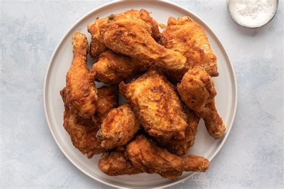

Fried Chicken Recipe

Crispy Fried Chicken
This is the only crispy fried chicken recipe you'll ever need. Why? It combines all the tried-and-true tricks
to
ensure the juiciest, most flavorful, crispiest chicken every time.
Ingredients
- Chicken
Cut a four-pound whole chicken into pieces or purchase four pounds of breasts,
drumsticks, wings, legs, and/or thighs at the grocery store.
- Buttermilk
Acidic buttermilk tenderizes the chicken without making it too
tough.
Also, it helps the flour mixture stick to the chicken.
- Flour
All-purpose flour gives the buttermilk and seasonings something to stick to,
while ensuring a wonderfully crispy crust.
- Seasonings
This crispy fried chicken recipe calls for paprika (which helps with
browning),
salt, and pepper. You can add more spices and seasonings to taste.
- Oil
Vegetable oil is perfect for frying chicken because it has a high smoke point.
Direction
- Make the breading
Combine the flour, paprika, salt, and pepper in a zip-top bag. Seal
the bag and shake until well-combined.
- Dredge the Chicken
Pour buttermilk into a shallow bowl, then dip the chicken (on both
sides) until it's completely soaked in buttermilk.
Place the soaked chicken in the bag with flour
mixture,
seal, and shake well to coat.Transfer the coated chicken to a baking sheet, and cover.
Allow the flour
coating to become a paste-like consistency.
- Fry the Chicken
Pour the oil in a skillet and bring it to high heat. Brown the chicken
on both sides, then reduce the heat, cover the skillet, and cook for about 30 minutes.
Remove the cover,
return the heat to high, and fry until extra crispy. Drain the chicken on paper towels.
Return to Front Page